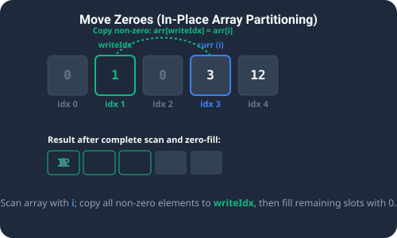

What We're Solving & Compacting Lists
Optimizing storage arrays by compacting non-empty data values is a very common performance task in backend engineering. The Move Zeroes problem requires us to modify an array in-place such that all occurrences of the value 0 are shifted to the end of the array, while preserving the relative ordering of all non-zero elements.
For example, given nums = [0, 1, 0, 3, 12], the resulting array should be transformed in-place to [1, 3, 12, 0, 0].
Crucially, we must accomplish this task without allocating a copy of the array (O(1) auxiliary space constraint) and while minimizing the total number of element writes to ensure high performance. This kind of array compaction is a key design pattern in database indexes and memory garbage collectors.

To visualize this two-pointer alignment strategy, imagine standing beside a moving conveyor belt:
- Toys & Empty Boxes: The belt holds a random mix of toys (non-zero numbers) and empty cardboard boxes (zeroes). Your goal is to pack the toys tightly together at the front of the belt in the exact order they arrived, leaving all the empty boxes at the back.
- The Write Marker: You place a marker pointing to the "next write slot" at the start of the conveyor belt.
- Scanning: As the belt moves, whenever a toy passes by, you pick it up, place it exactly at your "next write slot", and step the marker forward by one position. You ignore the empty cardboard boxes.
- Filling the Tail: Once all toys have been moved to the front, you fill all the remaining slots behind your marker with empty boxes.
Solving the Problem
1. Extra Array Sieve (O(n) Space)
We could allocate a temporary array of the same size, traverse the input array to write all non-zero values to the front, and then fill the remainder with zeros. While simple to implement, this approach requires O(n) extra memory, which violates the in-place modifier constraint.
2. Two-Pointer In-Place Shift (O(n) Time, O(1) Space)
We maintain an index tracker, insertPos, initialized to 0. We scan the array:
- Sifting Non-Zeroes: If the current value
nums[i]is non-zero, we write it atnums[insertPos]and incrementinsertPos. - Ignoring Zeroes: If the element is
0, we skip it. - Padding Zeroes: Once the traversal completes, all non-zero elements are compacted at indices
0toinsertPos - 1. We then loop frominsertPostonums.length - 1, setting each index to0.
Detailed Trace Walkthrough
Let's trace this two-pointer compaction step-by-step on nums = [0, 1, 0, 3, 12]:
- Step 1 (Initialization): Set
insertPos = 0. This pointer is ready to write the first non-zero element. - Step 2 (Index i = 0, Value = 0): The value is
0. We skip it.insertPosremains0. - Step 3 (Index i = 1, Value = 1): The value is
1(non-zero).- Write at target:
nums[insertPos] = 1→nums[0] = 1. - Increment
insertPosto1. Array state:[1, 1, 0, 3, 12].
- Write at target:
- Step 4 (Index i = 2, Value = 0): The value is
0. Skip it.insertPosremains1. - Step 5 (Index i = 3, Value = 3): The value is
3(non-zero).- Write at target:
nums[insertPos] = 3→nums[1] = 3. - Increment
insertPosto2. Array state:[1, 3, 0, 3, 12].
- Write at target:
- Step 6 (Index i = 4, Value = 12): The value is
12(non-zero).- Write at target:
nums[insertPos] = 12→nums[2] = 12. - Increment
insertPosto3. Array state:[1, 3, 12, 3, 12].
- Write at target:
- Step 7 (Loop Finish & Padding): The traversal loop completes. We pad indices from
insertPos = 3tonums.length - 1 = 4with0:- Set
nums[3] = 0. - Set
nums[4] = 0.
- Set
- Step 8 (Completion): The final array is transformed to
[1, 3, 12, 0, 0]. The relative order of1, 3, 12is preserved, and all zeroes are successfully moved to the end.
Code Highlights & Explanations
Key mechanics of our Java implementation:
nums[insertPos++] = numdynamically updates the write target index during the single-pass copy.- The trailing
while (insertPos < nums.length)loop acts as a cleanup pass, replacing the duplicate elements left behind by the shift.
Java Solution
Below is the complete, self-contained Java source code demonstrating both the brute-force and the optimized in-place two-pointer approach.
package io.practise.dsa;
import java.util.Arrays;
public class MoveZeroes {
// Brute Force - O(n) with extra space
public void moveZeroesBrute(int[] nums) {
int[] temp = new int[nums.length];
int index = 0;
for (int num : nums) {
if (num != 0) {
temp[index++] = num;
}
}
System.arraycopy(temp, 0, nums, 0, nums.length);
}
// Optimized - O(n) in-place
public void moveZeroes(int[] nums) {
int insertPos = 0;
for (int num : nums) {
if (num != 0) {
nums[insertPos++] = num;
}
}
while (insertPos < nums.length) {
nums[insertPos++] = 0;
}
}
public static void main(String[] args) {
MoveZeroes solver = new MoveZeroes();
int[] nums = {0, 1, 0, 3, 12};
System.out.println("--- Move Zeroes Demonstration ---");
System.out.println("Input Array: " + Arrays.toString(nums));
System.out.println("\nExecuting In-Place Shift...");
int insertPos = 0;
for (int num : nums) {
if (num != 0) {
System.out.printf(" Found non-zero %d. Writing to insertPos %d.\n", num, insertPos);
insertPos++;
}
}
System.out.printf(" Filling remaining spots from index %d to %d with 0.\n", insertPos, nums.length - 1);
int[] testNums = {0, 1, 0, 3, 12};
solver.moveZeroes(testNums);
System.out.println("Result Array: " + Arrays.toString(testNums));
}
}Conclusion & Takeaways
Compacting values using two pointers allows us to optimize array layouts in-place without wasting memory space. By leveraging one pointer to scan elements and another to record write locations, we achieve maximum data packing in a single linear pass.